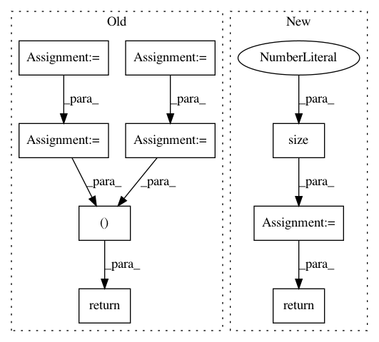

f6532b3c4c329e6d5d5fb846acc441df47616c4c,torch_geometric/nn/models/gnn_explainer.py,GNNExplainer,explain_node,#GNNExplainer#Any#Any#Any#,51
Before Change
loss.backward()
optimizer.step()
node_feat_masks = self.node_feat_masks
node_feat_masks = [mask.detach().sigmoid() for mask in node_feat_masks]
edge_masks = [mask.detach().sigmoid() for mask in self.edge_masks]
self.__clear_masks__()
return node_feat_masks[0], edge_masks
def visualize_subgraph(self, node_idx, edge_index, threshold=None):
assert self.edge_masks is not None
After Change
def explain_node(self, node_idx, x, edge_index, **kwargs):
self.model.eval()
num_edges = edge_index.size(1)
// Only operate on a k-hop subgraph around `node_idx`.
x, edge_index, hard_edge_mask, kwargs = self.__subgraph__(
node_idx, x, edge_index, **kwargs)
// Get the initial prediction.
with torch.no_grad():
log_logits = self.model(x=x, edge_index=edge_index, **kwargs)
pred_label = log_logits.argmax(dim=-1)
self.__set_masks__(x, edge_index)
self.to(x.device)
optimizer = torch.optim.Adam([self.node_feat_mask, self.edge_mask],
lr=self.lr)
for epoch in range(1, self.epochs):
optimizer.zero_grad()
h = x * self.node_feat_mask.view(1, -1).sigmoid()
log_logits = self.model(x=h, edge_index=edge_index, **kwargs)
loss = self.__loss__(0, log_logits, pred_label)
loss.backward()
optimizer.step()
node_feat_mask = self.node_feat_mask.detach().sigmoid()
edge_mask = self.edge_mask.new_zeros(num_edges)
edge_mask[hard_edge_mask] = self.edge_mask.detach().sigmoid()
self.__clear_masks__()
return node_feat_mask, edge_mask
def visualize_subgraph(self, node_idx, edge_index, edge_mask,
threshold=None):
assert edge_mask.size(0) == edge_index.size(1)
In pattern: SUPERPATTERN
Frequency: 3
Non-data size: 9
Instances
Project Name: rusty1s/pytorch_geometric
Commit Name: f6532b3c4c329e6d5d5fb846acc441df47616c4c
Time: 2020-03-22
Author: matthias.fey@tu-dortmund.de
File Name: torch_geometric/nn/models/gnn_explainer.py
Class Name: GNNExplainer
Method Name: explain_node
Project Name: rusty1s/pytorch_geometric
Commit Name: 37847c77889e39143034af9fe0d4b92bc74e992a
Time: 2018-03-02
Author: matthias.fey@tu-dortmund.de
File Name: torch_geometric/datasets/utils/ply.py
Class Name:
Method Name: read_ply
Project Name: rusty1s/pytorch_geometric
Commit Name: 62a05d5e2611f6ec8fda2c7d7c5b57cf8b64402b
Time: 2018-01-12
Author: matthias.fey@tu-dortmund.de
File Name: torch_geometric/nn/functional/pool/pool.py
Class Name:
Method Name: max_pool